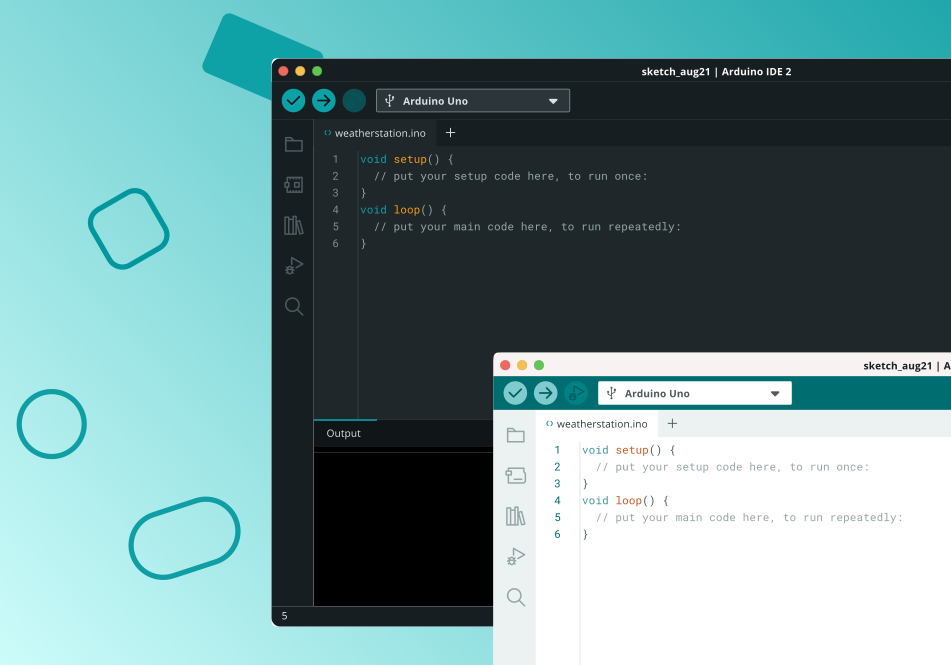
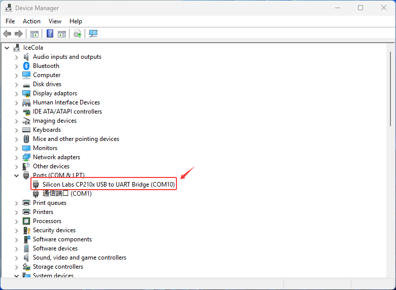

Arduino IDE Getting Started Tutorial

The Arduino IDE is an open-source programming tool officially provided by Arduino, supporting C/C++ development.
It provides users with simple and intuitive code writing, compiling, and uploading functions, making it easy to burn programs to development boards such as Arduino and ESP32.
The IDE includes extensive built-in example code and supports library file extensions, allowing developers to quickly access drivers for various sensors and modules, enabling a rich set of hardware interaction features.
With its cross-platform support (Windows, macOS, and Linux), the Arduino IDE is widely used in education, makerspaces, and IoT development, making it an essential tool for both beginners and advanced embedded development learners.
1. Install Arduino IDE
This section will guide you through installing the Arduino IDE on Windows, macOS, and Linux systems.
Install Arduino IDE on Windows
1.1 Visit the official Arduino website and go to the software download page: Download Arduino IDE

{kind=link}
1.2 Select the version that matches your computer configuration, then click the Download button to begin.
Note
The Arduino IDE is updated frequently. To ensure compatibility, it is recommended to download the latest official version.
1.3 Run the installer by double-clicking the downloaded arduino-ide_xxxx.exe file.
1.4 Read and accept the License Agreement.

1.5 Select the desired installation options.

1.6 Choose the installation path. It is recommended to install the software on a non-system drive.

1.7 Click Install and wait for the process to complete. Finally, click Finish.

Install Arduino IDE on MacOS
Double-click the downloaded
arduino-ide_xxxx.dmgfile.Drag and drop Arduino IDE.app into the Applications folder.
After a few seconds, you will see Arduino IDE installed successfully.

Install Arduino IDE on Linux
For Linux users, please follow the official tutorial for Arduino IDE 2.0 installation: Linux Installation Guide
Open the Arduino IDE
When you open Arduino IDE for the first time:
The software will automatically install the Arduino AVR Boards, built-in libraries, and other required files.

During installation, your firewall or security center may ask for permission to install drivers. Please allow all requests.

Note
If some installations fail due to network issues, simply reopen the Arduino IDE and it will continue the remaining installation steps.
The Output Window will not appear automatically after setup. It will only open when you click Verify or Upload.
2. Install Serial Port Tool
This kit uses an ESP32 board with a CP2102 USB-to-UART bridge. Ensure the CP2102 driver is installed on your computer before connecting the board, or the serial port will not be detected. Connect the board, press Win+X to open Device Manager, and verify the driver is installed. If not, use the link below to download and install it.
{kind=link}

Click here to access the official driver download page download CP210X
Please watch the video above for detailed download and installation instructions.
3. Install ESP32 Core Board
Add Additional Boards Manager URL
Open the Arduino IDE, click File → Preferences in the upper left corner, and copy and paste the following address into the Additional Board Manager URLs input box.
After entering the URL, click OK.
Copy and paste the following link into it:
https://espressif.github.io/arduino-esp32/package_esp32_index_cn.json


Precaution
After completing this step, you need to close and reopen the Arduino IDE.
Download the ESP32 Core Package
Open the Arduino IDE, click the second icon on the left to open the BOARDS MANAGER page.

Enter ESP32 in the search box and press Enter.
Find the core package titled esp32 by Espressif Systems, select version 3.2.0 from the drop-down menu, and click Install to download and install it.

Please wait for the download progress bar in the lower right corner to complete.

When the download is complete, the message Successfully installed platform esp32:3.2.0 will be displayed.

Check if the installation is successful:
Click Tools → Board → esp32 to check whether an ESP32 development board is available for selection.

Precaution
We recommend installing ESP32 Core Package version 3.2.0, or using version 3.0 or later.
Older versions may be incompatible with the libraries used in this tutorial, causing program errors.
If you have an earlier version installed, uninstall it and then reinstall version 3.2.0 of the ESP32 Core Package.
4. Add Libraries
Arduino libraries can significantly simplify the development process.
They encapsulate commonly used functions and hardware driver code, allowing users to simply call ready-made functions without writing complex low-level code from scratch.
For example, the LiquidCrystal_I2C library allows users to drive an LCD1602 display with just a few lines of code.
A wealth of community-provided third-party libraries also allows for quick integration with various sensors and modules.
These library functions make it easy to interact with hardware and expand Arduino’s functionality.
Download Libraries
We’ve compiled all the libraries necessary to run this suite. Please click the link below to download them and follow the instructions to complete the installation: Download libraries
Unzip the downloaded library file. The library file storage path is Code and Libraries → Libraries . Open it and confirm that it contains the library file shown in the figure below.

Import Libraries
Open the Arduino IDE and click Sketch → Include Library → Add .ZIP Library.

In the pop-up window, locate the folder of the library you just downloaded and unzipped, select it, and click Open to complete the import.

If the library file is imported successfully, the Arduino IDE output window will display the message: Library installed.

Precaution
Arduino IDE does not support importing multiple libraries at once; you must import one library at a time.
If a library file already exists, a prompt will appear asking whether to overwrite it. It is recommended to confirm overwrite to avoid program errors caused by different library versions.

Verify that the library was imported successfully:
Click Sketch → Include Library, scroll down to Contributed Libraries, and check whether the library files we provided are listed.
Download Libraries Using Arduino IDE
You can also download required libraries directly using the Arduino IDE.
On the right side of the Arduino IDE interface, click the Library Manager icon.
Enter keywords in the search box to find the required library and click Install to download.